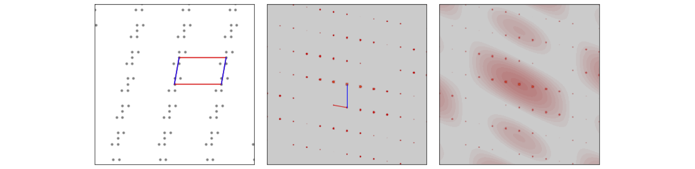
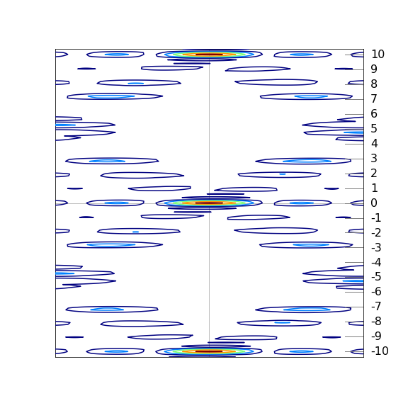

The Fourier transform in two dimensions: images and x-ray Diffraction¶
Motivation and concept¶
The fourier transform can be extended to 2D and 3D. The 2D transform is important in image analysis, optics and 2D spectroscopies such as ultrafast infra-red and nmr analysis. The 3D transform is used to describe x-ray diffraction from crystals which is the definitive way of determining molecular structure and is of central importance in chemistry and biochemistry. We shall illustrate how x-ray diffraction leads to structure using 2D fourier transforms.
12. 2D transforms.¶
The 2D forward and inverse transform is written down easily by analogy with the 1D versions, but rather than use \(k_x,k_y\) for the conjugate variables it is clearer instead to use \(u,v\)
and, clearly, if the function \(f(x,y)\) can be written as the product \(f(x)f(y)\), which means no terms such as \(xy\) are present then the 2D transform is the product of 1D ones, which is a great simplification,
The symmetry properties of the function \(f\) are important and show themselves clearly in the transform, which is most easily viewed as an image. If \(f(x,y)\) is real, which it will be in an experiment, then \(g(u,v)=g^{*}(-u,-v)\) and then \(|g(u,v|^2\) is centrosymmetric, i.e. has a centre of inversion. If the function does not change after rotation about the origin by \((360/n)^\text{o}\), i.e. is indistinguishable after \(n\)-fold rotation, then the transform behaves similarly. If \(f\) is real and \(n\) is odd then \(|g(u,v|^2\) has \(n\)-fold symmetry but is also centrosymmetric so that \(2n\)-fold symmetry is apparent in the transform, i.e. \(5\)-fold symmetry appears as \(10\)-fold, see figure 63. Mirror planes behave similarly, \(f(x,y)=\pm f(-x,y)\) produce \(g(-u,v)=\pm g(u,v)\) and \(|g(u,v|^2\) has mirror plane symmetry. Besides these symmetry properties the basic inverse relationship between a function and its transform still exists, but now in both \(x\) and \(y\), i.e. the further apart the features in the function are the closer they will be in the transform and vice versa.
The first image below is that of two point sources and results in a cosine shaped image as the transform of two delta functions is a cosine. A cut through the image along the direction of the two points would produce a cosine, although the way the colour is presented in the image distorts ones perception of this. The four-fold image shows the same effect but now in two directions producing a transform of squares rather than lines. The blue part of the image has the greatest intensity, the red the least. The three-, five- and seven-fold points produce double the symmetry due to the transform being centrosymmetric. As a technical aside, when calculating the transforms the images have to be centralised before they have the appearance shown. Python/numpy has a function to do this. If the numpy library is called np then the transform of a 2D array called image is \(\mathtt{g2D = np.fft.fft2(image)}\) and to centralise the transform \(\mathtt{FTimage = np.fft.fftshift(g2D)}\). Plotting can be done using \(\mathtt{plt.imshow(FTimage)}\).
Figure 63. The absolute values of the fourier transforms of the point images shown in the inset to each figure for \(2,3,4,5,6, 7\) fold rotational symmetry. The doubling of the symmetry when there is an odd number of points is clear as are the mirror planes. The points are rotated slightly from vertical to show that the transform follows the orientation of these points. A grid of \(2^{10}\times 2^{10}\) points was used to make the transform. Blue is the most intense, dark red the least.
The 1D transform of a single ‘top hat’ or rectangular shape is the sinc function, see fig 15 earlier in the chapter. In two dimensions the ‘top hat’ function in \(x\) becomes a slit, of infinite length in the \(y\) direction, or a rectangular hole if \(y\) is of finite length. Light passes through the slit will be diffracted, (Franhofer diffraction), and its intensity is described by the absolute value of the fourier transform. These transforms can be observed experimentally using a laser pointer or collimated light from a LED with masks cut with rectangular or circular apertures or as pinholes representing a molecule’s atoms or even a lattice of pinholes. When the light is projected onto a screen the transform should be apparent. The size of the apertures relative to laser wavelength need to be considered to optimise the effects. The transform can also be calculated as illustrated below.
The transform of the slit of width \(a\) if the function \(f(x,y) = \begin{cases} 1, & |x|\le a/2 \\ 0, &|x|\gt a/2 \end{cases}\)
and is infinitely long in the \(y\) direction, as is shown by the limits,
and along the axis \(v=0\) and therefore the delta function \(\delta(v)=1\) and the diffracted light has intensity \(|g(u,v)|^2=a^2\text{sinc}(au/2)\).
If there is a rectangular hole of size \(a x b\) then the similar calculation uses both finite limits and is
which are two sinc functions at right-angles to one another. The image is shown in fig 64. If diffraction occurred through such an aperture the absolute value would be obtained because detectors (and our eyes) measure the intensity which is the square of the light’s amplitude. The image would look similar except that all the function would be positive rather than both positive and negative. Notice the similarity of this to the transform of four points arranged in a square, fig 63, (ignoring the rotation of the latter). The difference in the transforms occurs because when more than one object is present a cosine along each symmetry axis is also present. This may be understood as the image of two or more delta functions convoluted with the shape of the object itself; when more than one object is transformed the transform spreads out over transform space.
Figure 64. The transform of a rectangular aperture. \(\displaystyle g(u,v)=4\sin(au/2)\sin(bv/2)/uv\) where \(b/a=2\) The dotted lines show the negative part of the transform. Yellow represents large values. The straight horizontal and vertical lines are where the transform is exactly zero and shows that the image is dissected by the zero’s of the function in both vertical and horizontal directions. The vertical lines are separated horizontally by \(2\pi/a\), the horizontal by \(2\pi/b\) except for the centres which are separated by twice these amounts. A horizontal or vertical cut through the centre lines will produce a plot of the sinc function as in figure 15.
The transform of annular aperture (ring) and of a disc shaped aperture can be calculated in a related way by using polar coordinates, which is far more convenient because of the radial symmetry. The transform for a ring is in terms of a Bessel function and for a disc is an Airy function, both of which are integrals that oscillate rather as the sinc function does. The transforms for one and two discs is shown, as their absolute value, in figure 65. These results are calculated using the numerical FFT. The diffraction pattern has the symmetry of the circle with ever increasing waves radiating outwards. The right-hand figure shows two discs separated by a small amount, here the transform looks like that of two points (a cosine) convoluted with a disc, i.e a cosine superimposed on expanding circles. The cosine rises and falls along the direction of centres of the two discs. The closer the two discs are the further apart the features in the transform due to the reciprocal nature of the variables in real space (\(x,y\)) and conjugate or transform space (\(u,v\)).
Figure 65, Left. Single disc and its transform (as absolute value) shown as an image. Right. Two discs showing the effect of two points convoluted with a disc. The disc’s transform is divided up by a cosine. If the separation of the discs is \(d\) pixels the fringes are separated by \(1/d\) which in this figure is \(2^N/d\) pixels for an image of \(N\times N\) pixels.
The similar effect can be seen in fig 66 where four squares are displaced just as in the top right image of fig 0, but in fig 66 the objects have vertical and horizontal sides. This extra symmetry is imposed on the diagonal cosine lines lines shown in figure 63 as extra vertical and horizontal features, just as in figure 64. Furthermore, the size of the squares is smaller than their separation so that the extra lines in fig 66 compared to 65 are further apart than the pattern due to the the centres of the squares themselves. This is because of the reciprocal relationship of the transform from ‘real space’ to ‘transform space’ or from \(x\) to \(k\) the conjugate variables.
Figure 66. Absolute value of the fourier transform of the four squares shown in the inset. Compared to the top right image of figure 65, the extra symmetry of the vertical and horizontal lines is apparent and similar to that in figure 64. The image area shown is 9 times than that in 65 and the colour range has been exaggerated/saturated to show the detail. Blue is the highest, red the lowest intensity.
Similar effects are seen with lines and zig-zags as shown in the next figure, fig 66a. A single line is transformed into a line but in the conjugate orientation, fig 66a left, with two parallel lines the same feature is observed but now split by the reciprocal of the separation of the lines. Thus the larger the separation the closer together the transformed interference fringes become, (middle figure). On the right two sets of parallel lines for a zig-zag and the image is that of the parallel lines in each direction. The X or cross pattern is characteristic of a zig-zag and a helix and was essential for unravelling the structure of DNA as explained below, section 13.10.

Figure 66a. Left. The absolute value of the transform of a line formed from a set of points (pixels), middle, two parallel lines and right a zig-zag. The insert shows the initial shape.
In figure 63 the transform of some regular patterns was calculated and with an irregular pattern, such as the arrangement of atoms in many molecules, related result is produced. Figure 67 shows the transform of the pattern shown in the inset. There are similarities with the patterns of fig 63, but the lower symmetry restricts the symmetry of the transform.
Figure 67. Five atoms and their fourier transform.
The fourier transform of a lattice of points is also a lattice but now in transform space. The 2D lattice, fig D10, has a minimum repeating shape with lengths of \(a = 70\) and \( b = 120\) set at an angle \(\gamma=80^\text{o}\). The fourier transform is also a grid with lengths \(a^*,b^*\) of
but because we have used a grid to do the transform, i.e. sampled the lattice by making a 2D grid, the \(a,b\) values must be multiplied by the grid size, in this case \(2^{12}\). In fig 63 the top right-hand image shows the absolute value of the transform of just four points set as a square. In the grid of fig 68 there are numerous groups of four points and so the transform becomes more like a set of point functions just. This is similar to what happens in one dimension where several wide top-hat function produce a set of narrow transforms and an infinite number eventually a comb of delta functions.
Figure 68. A 2D lattice and the absolute value of its fourier transform. Notice how the image is rotated and the lengths between points are related as reciprocals. Lengths \(a\) and \(a^*\) are shown in blue, \(b,\;b*\) in red.
If each point is now ‘decorated’ to form a pattern as in fig 69, i.e. to make a 2D lattice of ‘molecules’, the transform’s pattern is just the same as that consisting only of points, fig 68. This may seem surprising. The positions in the transform are unchanged, compared to a plain lattice, due to the regular or repetitive nature of the points, but their relative intensity is modulated. The key point is that it is the intensity of each spot that provides the information about the structure of the original image, not the position of the spots in the transform, which gives only the spacing of the repeated pattern. The various intensities in the transform is due to the fact that interference from different atoms occurs in a manner depending only on their relative positions.
The image of molecules on a lattice, the transform and the transform with the superimposed transform of a single molecule is shown in fig 69. We can think of the transform as the convolution of a single molecule with a lattice of points.

Figure 69. Left, a lattice of molecules, with the unit cell outlined (\(a\)=blue). Centre, the absolute value of the transform and the reciprocal unit cell (\(a^*\)=blue), and Right, the absolute value of the transform of the whole and the absolute value of transform of a single molecule superimposed. Note how in the transform the intensity of the spots changes and follows that of the single molecule’s pattern.
13 X-ray Diffraction.¶
13.1 Diffraction of x-rays¶
The structure of a molecule can be determined by detecting the x-rays diffracted by its crystal. The experiment consists of diffraction, detection and computational analysis which combined act as if a microscope was used. The explanation of how this works has two parts: (1) how is magnification achieved and (2) how does the measured data lead to the structure. The first part is quite straightforward, the second more involved.
Magnification¶
The magnification can be explained by reference to Huygens’ wavelets as in figure 70a. A plane wave arrives at the bottom of the figure and is diffracted by two slits shown as red dots, alternatively these represent sources in their own right, for example two atoms whose electrons re-radiate x-rays. By calculating where the circular wavelets overlap the position of the bright fringes on a detector can be predicted. To be accurate this has to be done in the ‘far field’, i.e. at a very great distance from the source of diffraction. Alternatively, by assuming that the path lengths are different by integer numbers of wavelengths produces \(n\lambda = d \sin(\theta)\) where \(d\) is the separation of the sources, \(\lambda\) the wavelength and the integers are \(n=0,\pm 1,\pm 2\cdots \). The angle \(\theta\) can be obtained from the experiment, as shown in the figure where \(\tan(\theta)=(d/2+x)/R\) and \(x,R\) are measurements. These values are generally many centimetres where as \(d,\lambda \) are millions of times smaller. This is made clearer when the angle \(\theta\) is small, then \(\tan(\theta)\approx \sin(\theta) \approx \theta \) making \(\displaystyle \frac{x}{R} =\frac{n\lambda}{d}\) and as these are ratios the orders of magnitude difference in size cancel out and once \(\lambda\) is known so is \(d\).
The deflection caused by diffraction is crucial here for this separates the diffracted beam from the initial one allowing it to be detected against a dark (zero) background and secondly the fact that the angle of detection depends on the separation \(d\) means that many distances can be separately measured without overlapping one another. The ratio of distances automatically enables magnification once the beams have propagated far enough to allow accurate measurement of diffracted spot positions.

Fig. 70a. Huygens wavelets to explain magnification after x-ray diffraction. The wavelength is \(1/4\) of the separation \(d\) making the first order diffracted beams appear at \(\pm 14.5^\text{o}\) from the vertical. In practice \(R \gt x\gg d\). The sketch on the right shows the calculation to determine the angle \(\theta\) from measurements of \(x\) and \(R\).
Structure¶
Before we can find the cell dimensions it is necessary to understand how the x-rays are diffracted off the repeated and regular structure of the crystal. Diffraction of x-rays occurs by interaction of the electrons with the x-rays which then re-radiate in all directions. Only those directions satisfying conservation of momentum produce a diffracted beam that can be recorded as a bright spot on a detector. This means the only waves detected are those whose path-length differs by an integer number of wavelengths and therefore add constructively and re-enforce one another, all other waves cancel to zero. The condition for diffraction is given most generally by the Laue equation or equivalently and more simply by the Bragg condition, fig. 70,
where \(d\) is the perpendicular spacing between similar planes of atoms and \(\theta\) is the angle the incoming x-ray makes to the plane of atoms. The diffracted beam is also at \(\theta\) to the plane so the diffracted angle is \(2\theta\) from the incoming beam. The diffraction order is \(n\) and \(\lambda\) the x-ray wavelength, for example 0.1542 nm for Cu\(K_{1\alpha}\) or \(0.178892\) nm for Co\(K_{1\alpha}\).
As there are different orders of diffraction \(n = 0,\pm 1,\pm 2 \cdots\) the third order reflexion from \((100)\) planes, for example, can be looked at in this way or it could be a first order reflexion from the set of planes \((300)\) with \(1/3\) of the spacing of the \((100)\) planes. Consequently we can divide by the common factor \(3\), i.e.,
and this latter form of the equation is usually chosen by crystallographers so that \(n\) does not appear in the Bragg equation.
Although the x-rays are diffracted it is usual to speak of them being ‘reflected’ from the planes of atoms because of the similarity of the geometry to that of reflection by light. Often the archaic spelling ‘reflexion’ is used and we use this also as a reminder that diffraction occurs. Figure 70 shows (images A and B) the Bragg arrangement for scattering off planes containing atoms. The path-length of the diffracted rays must be integer multiples of one another and this is only achieved at a fixed \(d_{hkl}\) at a certain angle \(\theta\). Figures (C) and (D) show the scattering from different planes on the same lattice. Notice how the lattice has to be rotated to effect the Bragg condition for different \(h,k,l\) because \(\lambda\) is constant and has a fixed direction in any experiment. To satisfy the Bragg condition when \(d_{hkl}\) is small \(\theta\), the diffracted angle, has to be large and vice versa. As the crystal is rotated only at certain \(\theta\), and hence at some \(hkl\), will diffraction occur, otherwise x-rays will pass through without being diffracted. The result is an image of diffracted x-ray that contains relatively few spots, even if this number is many thousands.
It is clear from fig 70 and 71 that at large \(h,k,l,\;d_{hkl}\) is small and the diffracted angle \(\theta\) is large. Using a tetragonal crystal as an example, the larger the Miller indices (\(hkl\)) become the smaller the separation of the planes since
where \(a=b\ne c\) give the length of the unit cell’s sides. The smaller the values of \(d_{hkl}\) or the larger the \((hkl)\) the more detail the diffracted image of the crystal contains. In other words, as is expected for the conjugate relationship between fourier variables, small separation of lattice planes means spots at large distance from the origin in the diffracted image. This means that for fine resolution of a molecular structure accurate measurement of points at the periphery of an image is vitally important.
Figure 70. (A) The general Bragg condition. If the planes of atoms do not satisfy the Bragg condition at a certain angle no diffraction occurs. (B) Construction for the Bragg equation. The wavefronts emerging after diffraction are always in phase when the Bragg condition apples even though one beam has travelled a further distance and this extra distance is always a multiple of \(2\pi\) radians. (C),(D) two particular cases of the same lattice but showing diffraction from different Miller indices. The crystal has to be rotated to satisfy the Bragg condition as normally the x-ray wavelength and direction are both fixed. The relative \(d_{hkl}\) and angles are approximately correct for Cu K\(_\alpha\),\(\lambda = 0.154\) nm. The unit cell is shown as the red parallelogram.
13.2 Fourier Synthesis¶
The transform of several images has been described but these only become properly interesting when considered in the context of x-ray diffraction from crystals. The nature of x-ray diffraction is discussed shortly as is the connection between the crystal structure, the experimentally measured fourier transform and the fourier synthesis of the structure. To do this we shall have to understand the scattering of x-rays by the electrons in the planes of atoms that exist in a (perfect) crystal because of the repetitive nature of each atom’s position. The approach so far has been to start off with a lattice of points as in fig 68, or 69 and form the diffraction pattern, which is the fourier transform, but in an experiment things are the other way round, the data is the diffraction pattern and we want to know each atom’s position. The use of fast computers and new algorithms nowadays make most of the analysis automatic, nevertheless the fundamentals must be understood otherwise how would one know if the results of automatic analysis make sense?
The experimental data available is the position and intensity of the spots on the diffraction image. Because all detectors measure the intensity of the x-ray, which is its amplitude squared, and not its amplitude which is proportional to the electron density of an atom, the image cannot be directly transformed back into a structure. However, there is also an excess of information, for example, a molecule consisting of \(10\) atoms needs \(30\) values to determine its coordinates but there may be \(n=1000\) or so reflexions recorded so that there will be many redundant observations which can also be used. The problem is therefore given the intensities, how can we work backwards and determine the atomic coordinates? Bragg proposed a method, which is to let the intensities be found by a fourier series, this process is called fourier synthesis (section 1.1) rather than the fourier analysis described in section 6. Variants of fourier synthesis form the basis of almost all crystal structure determinations.
The equation for fourier synthesis in one dimension is
where \(a\) is the repeat distance, i.e. the length of one side of the unit cell, \(\varphi\) the phase and \(A\) the amplitude which ultimately depends on the type of atom. The greater the number electrons an atom has, the greater the scattering. The phase depends on how far an atom is from the origin of the unit cell in the direction of a particular \((hkl)\) plane. This is sketched in fig 71.
Figure 71. The phase of scattered x-rays is given by \(2\pi\) times the ratio of the perpendicular distance from the origin \((0,0,0)\) to an atom \(R\) at \((x,y,z)\) to the separation of the \(hkl\) planes \(d_{hkl}\) i.e. \(\varphi=-2\pi R/d_{hkl}\). The \(hkl\) plane is perpendicular to the plane of the diagram.
In three dimensions the same form of equation is found, now with directions \(x,y,z\), summation with the integers \(h,k,l\) and with unit cell dimensions \(a,b,c\). The property measured is the electron density \(\rho\), which has units of number of electrons/nm\(^3\),
which can also be put into the more general exponential form
The amplitudes \(A_{hkl}\) are related to the structure factors \(F_{hkl}\), described shortly, where \(A_{hkl}=F_{hkl}/V\) and \(V\) is the volume of the unit cell. The structure factors \(F_{hkl}\) are functions of the unit cell dimensions \(a,b,c\), the atom’s position e.g. \(x_j,y_j,z_j\) for atom \(j\) at each reflection plane \(h,k,l\) whereas in eqn. 53 the \(x,y,z\) are any coordinates in the unit cell used locate the electron density. Normally the unit cell \(x/a,y/b,z/c\) would be split in to a grid of, say, 25 points in each direction.
Equation 53 also shows how the electron density and structure factors are related as a fourier transform pair. The electron density is used to locate the atoms, large at an atom but small otherwise.
Often the atom coordinates are given as fractions of the unit cell dimensions, i.e. \(x/a\) instead of \(x\) etc. and then eqn. 53 becomes
so it is important to check what convention is used. Some authors also prefer to use vector notation so that \(hx+ky+lz\equiv \vec H \cdot \vec X\) where \(\vec H=[h,k,l],\; \vec X=[x,y,z]\) and \(\vec H \cdot \vec X\) is the dot product.
It is clear that to be able to calculate this series the unit cell dimensions (\(a,b,c)\) have to be found as well as the structure factor \(F_{hkl}\), and that is all that is necessary to determine the structure. In evaluating the series the electron density will rise at the position of an atom and fall, effectively to zero, between atoms giving a 3D picture of the atoms. In theory an infinite number of structure factors \(F_{hkl}\) are necessary in eqn. 53, but naturally we only have a finite number of diffraction spots and so some error is introduced into each atom’s position, but these are not too serious in x-ray diffraction because there is a fall-off in scattering intensity with Bragg angle \(\theta\) so that the structure factors get smaller as this angle increases. Consequently the series converges which is the next best thing to an infinite one.
All detectors measure the square of the absolute value of the structure factor, \(|F_{hkl}|^2\) thus only its positive magnitude is known, which is a serious problem because the structure factor can be positive, negative or complex. Because only the absolute values is measured leads to what is called the phase problem and is a significant obstacle in structure determination. No one has yet discovered how to measure the x-ray amplitude instead of the intensity and so a fourier synthesis has to be used, i.e. constructing the electron density by choosing, by non-linear, least-squares or other methods, various \(F_{hkl}\) until the data is fitted. This sounds quite simple but as we shall see the overall sign and magnitude of the calculated \(F\) depends on each atom’s position in the unit cell.
If the electron density is fourier transformed the structure factor is produced and because of the complex exponential terms this is also a complex number. Without going into details this can be therefore represented in the usual way as a real and ‘imaginary’ term
The absolute value squared is then
and where the \(h,k,l\) is dropped for clarity, so only the sum is produced and \(A\) and \(B\) are not known. In fact there is an infinite number of possibilities to make up any given \(|F|^2\).
Leaving these problems aside for the present, the first step in determining the structure is to obtain the unit cell dimensions and this means understanding the Miller indices to describe planes of atoms.
13.3 Unit Cell, Miller indices and planes of atoms¶
The convention in describing crystals is that a crystal structure consists of atoms, a crystal lattice consists of points, and a crystal system consists of axes usually described by vectors. In a crystal the unit cell represents a repeated structure containing the atoms positions and is described by vectors \(\bar a,\bar b, \bar c\), which need not be at right angles to one another. The unit cell is normally taken to have the minimum size needed to describe the repeating nature of the atoms. If a point in the unit cell is chosen to be the origin, a corner for example, this single position, when repeated over and over in the crystal, forms a lattice of points as in Fig 68. This lattice will belong to one of the \(7\) crystal systems and \(14\) Bravais lattices. The origin does not have to be the position of an atom but often is. The other atoms then form a similar lattice but displaced in a manner described by the atom’s position relative to the origin, this is equivalent to imagining that the whole unit cell is replicated again and again to form the crystal.
The 3D lattice based on the atom at the origin is then imagined to be divided into stacks of similar planes of atoms all in the same position relative in their unit cell, see fig 72. These planes (shown edge-on as lines in fig 72) are given indices (\(h k l\)) which are called Miller Indices where \(h,k,l\) are positive or negative integers including zero. Although there are numerous parallel planes we refer to them collectively using only their unique \(h,k,l\) values such as (\(3\;14\;\bar 1\)), where the bar indicates a negative direction. Via the Bragg diffraction equation (eqn. D4) each set of planes, and thus each \(hkl\), produce one bright spot on the detector.
To work out the Miller indices for any set of planes start by moving along the unit cell in the \(\bar a\) direction and count how many pieces \(a\) is divided into by the planes, i.e. the number of spaces crossed, then repeat this for sides \(b\) and \(c\), the integers produced are the Miller indices.
Figure 72. Labelling planes with Miller indices. The lattice is the same in both parts of the figure, only the \(a-b\) plane is shown.
An alternative way to find the Miller indices is to look along the edges of the unit cell and count how many unit cells it takes to meet the line whose \((hkl)\) is required. These three numbers are then listed, e.g. \((3a,\infty b,2c)\). The reciprocal of the integers is taken to make \((1/3,0,1/2)\) and then the fractions cleared by multiplying by the common factor to give \((2,0,3)\).
13.4 Calculating the unit cell and indexing¶
The unit cell dimensions can often be found using power diffraction, and you will probably have done such an experiment in a practical course. In this method the crystals are crushed and placed into a narrow glass capillary tube which is placed in the centre of the instrument. The detector moves in an arc round the sample and the diffracted x-ray are recorded as a function of the angle. This arrangement is called a Debye - Scherrer camera. In the past the detector was a strip of photographic film that was darkened by the x-rays and older textbook show the images produced as arcs on this paper. Nowadays a particle counting or imaging detector is used but in either case a plot of angle vs. intensity is produced. The crystals are at random angles (in \(\theta\) and \(\phi\)) but by Bragg’s law the diffraction can occur only at certain \(\theta\) angles of the planes of atoms to the x-ray beam (see fig72(A) but those planes can be anywhere around the x-ray beam at an angle \(\phi\), i.e. there is cylindrical symmetry. Different \(hkl\) planes diffract at different angles and so several cones are produced, see fig 73. As there are numerous crystals, all angles \(\phi\) around the x-ray beam direction (at a given \(2\theta\) ) will diffract and so the all cones will have many photons. The detector will intercept only a few of these as it moves in an arc, see fig 74, and produce a series of lines with a characteristic pattern.
Fig. 73. The powdered crystals have random orientations (\(\theta\) and \(\phi\)) and diffract along cones. The dots show that if there are just a few crystals only a few spots would be produced.
The arrangement of an experiment is shown in fig 74, and a simulated set of data in fig 75. In this figure the wide, grey regions are where the x-rays enter, on the left and leave on the right.
fig. 74. Arrangement for powder diffraction
fig 75. Simulated powder diffraction pattern from a cubic unit cell. The x-rays enter on the left and leaves on the right at \(\pm 180\).
The pattern in fig 75 corresponds to that of a cubic crystal of side \(a\) and combining the Bragg law and the inter-planar distance \(d_{hkl}\) gives
by using the formula above with \(a=b=c\). The pattern of lines, starting at the right (ignoring the \(180^\text{o}\)) and moving left shows six more or less equally spaced lines the a gap before the seventh line. The Miller indices \((hkl)\) are, from the right, \(100,110,111,200,210,211,220\cdots \) corresponding to \(h^2+k^2+l^2= 1,2,3,5,5,6,8\cdots\). There is no line when \(h^2+k^2+l^2 =7\) (or \(15\)) as this number cannot be made with integers, hence the gap in the pattern which characteristic of a simple cubic crystal. Face-centred and body-centred also have characteristic patterns with the restrictions that for fcc., \(hkl\) are all odd or all even, and for bcc., \(h+k+l\) must be even and so if plotted \(n\) has to follow these particular rules.
Once the \(\theta\) is measured a simple way of estimating \((\lambda/2a)^2\) is to plot \(\sin^2(\theta)\) vs. \(n\) where \(n\) is a sequence of integers and look for the points where the values cross by drawing horizontal and vertical lines on the plot. Next draw a straight line from the origin with guessed gradients until this line crosses each the other two. It is simpler than it sounds and is shown in fig76. Once the values of \(n\equiv h^2+k^2+l^2\) are known a least squares can be used to improve the fit.
Fig 76. Estimating the unit cell dimension \(a\) for a cubic crystal. Each horizontal line has the value \(\sin^2(\theta)\). By trying values, the slope of the straight line when each pair of the the horizontal and vertical lines cross, is \(\left(\lambda/2a\right)^2\) from which \(a\) can be calculated.
There are other methods such as visibly aligning a single crystal along a particular axis and using a rotation method to separate out different \(hkl\) because the alignment fixes one of these values and these methods are detailed in specialist texts such as McKie & Mckie ‘Essentials of Crystallography’ publ. Blackwell, 1986.
13.5 Atomic Structure Factors¶
As the x-rays scatter off the electrons in an atom, clearly the more electrons there are the greater the scattering will be. Thus we expect, and observe, that heavy atoms produce much more intense bright spots on a detector than do lighter atoms. However, atoms are not point objects but have a real size with an electron ‘cloud’ radius that is only a little smaller than a bond length. Electron density is greater towards the atom’s centre and less towards the perimeter.
Assuming a largely spherical electron distribution, when x-rays are scattered and detected at an angle away from incoming the x-ray’s direction, there will be a path-length difference between one side of the atom and the other and this leads to scattered waves becoming out of phase, and hence of reduced intensity and increasingly so as the scattering angle increases. As the atoms in a molecule are always close to one another, so are electrons on different atoms and this proximity potentially leads to a great computational complication. However, this is easily overcome by assuming that atoms are point objects and using a function, the atomic scattering factor, on each atom to allow for the scattering from its different parts. The atomic scattering factor is a decaying function of the scattering angle. At zero angle it is the atomic number \(Z\) (plus or minus the number of charges for ions) and decreases to a constant value in terms of \(\sin(\theta)\lambda=1/(2d_{hkl})\). The scattering factor can be accurately calculated using quantum chemistry methods, Hartree-Fock for example, and in some cases measured, and are known accurately. The calculated function can conveniently be described by the sum of four Gaussians, e.g.
with constants \(b_i\) and \(c\) tabulated for each atom and its ions. Later on, clarity, we label the atomic scattering factor \(f_j^{hkl}\) for atom \(j\) and Miller indices \({hkl}\). Typical examples are shown in fig 77.
Figure 77. Calculated atomic scattering factors.
13.6 Fourier Synthesis¶
To illustrate how fourier synthesis can work, suppose that there is a ‘crystal’ of only three diatomic molecules. Adding waves of different random frequencies but the same phase as shown in figure 1 of this chapter will always produce a complicated and repeating wave. By adding waves of different amplitude, frequency and phase it is possible to construct a total wave that is localised where the peaks are. Furthermore, relatively few waves are needed as shown in fig. 78. The left panel shows, at the top, the three molecules positioned face-on and the right-hand panel positioned edge-on, the summed wave is shown immediately below (brown) and the individual waves are numbered with their frequency. It is clear that with only a few waves their summed values can reproduce, quite well, the positions of the atoms. In an x-ray diffraction experiment the peaks would represent electron density and summing the waves is equivalent to calculating equation D1 given above.
Figure 78. Fourier synthesis of atomic positions. Left face on in x-y plane and right end on in the y-z plane. The waves forming the total are shown numbered below. Notice that the waves have different amplitudes and phases. (After J. Waser J. Chem. Educ. p446,v45,1968).
The right hand figure shows each molecule end on so has only one peak. Combining both figures can better reproduce the molecule if plotted as contours, and such a plot is shown in fig. 79, where the location of the atoms is clear. In this calculation the amplitude and phase of the waves was chosen by trial and error until a reasonable result was produced. This is equivalent to knowing the geometric structure factors \(F_{hkl}\) and an example of finding these is given next where the general formula is introduced.
Figure 79. Contour plot combining total waves from fig. 78 and shown as contours. The two central contours have the largest values, with others decreasing outwards.
13.7 The Structure Factor \(F_{hkl}\)¶
The structure factor, \(F_{hkl}\), measures the size of the scattering from each \(hkl\) plane by taking into account where the atom is relative to the plane and the atomic scattering factor, \(f_q\), for that particular atom. To do the calculation, waves from each atom in the unit cell have to be summed as they are in superposition. The result could be zero if the total, by symmetry adds up to this or could be positive or negative. A zero result is an example of systematic absences. In chapter 1 the superposition of cosine waves of frequency \(\omega\) and phase \(\varphi\), such as \(\psi=a\cos(\omega t +\varphi)\), was examined. The more general wave is written as a complex exponential, with \(i=\sqrt{-1}\),
where the amplitude is \(a=|a|e^{i\varphi}\) and as the phase varies from \(0\to \pi\) the exponential changes from \(1\) to \(-1\). The frequency \(\omega\) is the same for all waves and can be ignored henceforth at it changes nothing.
The amplitude of several waves is the sum of amplitudes and becomes
where De-Moivre’s theorem was used. The (square law) detector always measure the intensity not the amplitude, i.e. \(a_s^*a_s\) and so the result of a measurement is
In x-ray crystallography the amplitude is given by the atomic structure factor of atom \(j\) at each \(hkl\), \(f_j^{hkl}\) and the phase \(\varphi=2\pi(hx_j+ky_j+kz_j)\). The summation is only over the number of atoms \(N\) in the unit cell and the \(x_j,y_j,z_j\) are the atom coordinates as fractions of the unit cell dimensions.
The cosine and sine terms are sometimes called the geometric structure factors because they are functions of coordinates \(x_j,y_j,z_j\) of the \(j^{th}\) atom in the unit cell. Notice that \(F_{hkl}\) can be zero, positive, negative, real or complex. The detector measures an \(hkl\) reflexion as
and this is true for all crystals whatever their symmetry. Whenever there is a centre of symmetry, such as in Rutile (TiO\(_2\)), the sine terms in the aggregate evaluate to zero and this is because for each angle \(\theta\) there is one at \(-\theta\) and \(-\sin(\theta)=\sin(-\theta)\).
The diffraction itself produces scattering of amplitude \(F_{hkl}\) which brings us back to eqn 53 which shows how the electron density is related to the structure factor. The measurement changes the data by effectively measuring the absolute value \(|F_{hkl}|\) and the sign of \(F\) is therefore lost and there is no experimental method with which to determine it. Using fourier synthesis is the option mainly used, effectively guessing a structure based on starting with as much information as is available about the molecules and its crystal and proceeding by least squares type fitting until an acceptable ‘model’ of the molecules is reached.
In some cases, particularly when the origin of the unit cell is centro-symmetric, (has a centre of inversion) the structure factor is always real and the phase angle can only be \(0\) or \(\pi\) so \(e^{i\varphi} =\pm 1\).
13.8 Example of calculating the structure factors, TiO\(_2\)¶
To calculate the structure factor and so spot intensity we use the coordinates for TiO\(_2\) which has a tetragonal structure with \(a = b = 4.653\, ,c=2.969\), \(\alpha=\beta=\gamma=90^\text{o}\) with \(a,b,c\) in Angstrom. Figure 80 shows the structure. The repeating unit consists of two Ti atoms and four oxygens. The central Titanium is octahedrally coordinated with respect the the oxygens and the other Ti atoms are at the corners of the square prism. The atom coordinates are
\(\begin{array}{lll} \text{Ti0} & [0.5000& 0.5000& 0.0000] & \text{Ti1} & [0.0000& 0.0000& 0.0000]\\ \text{O1 } & [0.8045& 0.1954& 0.5000]& \text{O2 } & [0.1954& 0.8045& 0.5000]\\ \text{O3 } & [0.3045& 0.3045& 0.0000]& \text{O4 } & [0.6954& 0.6954& 0.0000]\\ \text{O5 } & [0.3045& 0.3045& 1.0000]& \text{O6 } & [0.6954& 0.6954& 1.0000]\\ \end{array}\)
The unit cell consists of the four oxygen atoms labelled and the Ti atom at bottom left connected to oxygen 1 and the central one. When an atom does not lie on a plane defined by \((hkl)\) it still scatters x-rays but with a phase shifted by the fraction of the separation between the \(hkl\) planes. The following analysis and figures are adapted from chapter 6 of C. Bunn, ‘Chemical Crystallography’ publ. OUP. 1961.
Figure 80. The structure of Ti0\(_2\). The Ti atoms are black the oxygen red and the numbered O atoms show the repeating unit containing the Ti atom at the lower left connected to oxygen 1 and the central one. The atoms are not shown at their real size, the O\(^{2-}\) has a radius \(\approx 1.23\) Angstrom and the Ti\(^{4+}\approx 0.65\) Angstrom.
(100) reflexion¶
In this and the other reflexions we will calculate the structure factor by examining individual waves rather than plugging values into eqn. D4. Of course in practice the equation would always be used but it is useful to gain an insight into what the equation means.
The set of (100) planes is shown in the figure 100F by looking down the \(c\) axis. The symmetry of the structure can be easily seen. The waves produced by the distance \(d_{100}\) are shown on the right. In this case the diffracted intensity is zero when summed over the two Ti and four oxygen atoms.
As shown in fig. 70, if an atom is at a distance \(D\) from a plane it is at a fraction \(D/d_{hkl}\) of the inter-planar distance with a phase of \(2\pi D/d_{hkl}\) and contributes \(f_{d_{hkl}}\cos(2\pi D/d_{hkl} )\) to the total intensity where \(f_{d_{hkl}}\) is the atomic scattering factor for the atom at distance \(D\) with coordinate \({xyz}\), see fig. 77. When the phase is zero or \( 2\pi\) then the cosine is \(1\) because \(\cos(0)=\cos(2\pi) = 1\). Similarly if the phase difference is \(\pi/2\) or \(90^\text{0}\) the phase is zero; \(\cos(\pi/2)=0\). The opposite is the case for phase based on sine waves but as the TiO\(_2\) has a centre of symmetry at the origin, the sine terms always add up to zero and need not be calculated.
Looking down the \(c\) axis in fig. 80, i.e. showing the edges of the (110) planes, seen as horizontal lines, produces fig. 81; the Ti\(_2\) ion is at half the \(d_{100}\) distance and so has phase \(\cos(2\pi/2)=-1\) where as the Ti\(_1\) ion is at zero and so has phase(\(\cos(0)=+1\) so the waves from each of these ions are completely out of phase and so add to zero. Similarly the oxygen atoms \(1\) and \(3\) are separated by \(D=d_{100}/2\) so are also completely out of phase with one another and for the same reason so are O atoms \(2\) and \(4\). Thus each atom is paired with another similar one exactly out of phase with it and diffraction from the \((100)\) plane is expected to have a structure factor of zero; \(F_{100}=0\) as is confirmed by experiment.
Figure 81. Left. View down the \(c\) axis showing the \((100)\) plane and the distance used in calculating the structure factor \(F_{100}\). The Ti ions are shown in black the oxygens in red. Right. Showing the waves belonging to each atom in this reflexion. Each wavelength is \(d_{100}\). The sum of all waves is zero.
(200) reflexion¶
Although the \((200)\) planes are parallel to \((100)\) the \((200)\) reflection is not zero. This can be seen in fig. 82, and is because the \(d_{200}\) is half that of \(d_{100}\). This means that Ti\(_1\) and Ti\(_2\) are now in phase with one another as each is on a \((200)\) plane and therefore each has zero phase. The phase contribution from the Ti ions is therefore \(2f^{Ti}_{d_{200}}\cos(0)=2f^{Ti}_{d_{200}}\cos(0) = 16.02\) where the number is the value of the atomic scattering factor at \(1/2d_{200}=0.214\). Pairs of oxygen atoms are in the same relative symmetry, \(1 : 3\) and \(2 : 4\) so only the phase of O\(_2\) and O\(_3\) need be calculated. Oxygen 2 is at \(y/b=0.8025\) so the structure factor is \(F^O_{d_{200}}\cos( 2\pi h 0.8025)= -4.76\) where \(k=l=0\) and \(x/a=0.8025\). The same value is found for all the oxygen atoms making the total structure factor \(F_{d_{200}}= 13\) and the intensity \(169\).

Figure 82. Left. Same view as figure 81. The \((200)\) planes are shown as lines. Right The waves from each atom and their sum is shown in red whose amplitude is moderate. By symmetry oxygens \(1\) and \(3\) contribute equally as do \(2\) and \(4\).
(110) reflexion¶
The (110) reflection is strong, fig. 83. All the Ti atoms are in the (110) plane and so their phase is \(0\) or \(2\pi\) thus the cosine is unity and the amplitude of each is \(f^{Ti}_{d_{110}}=16.95\) where \(1/2d_{110}= 0.152\). Oxygens \(1\) and \(2\) are also in the plane and their phase is similarly \(2\pi\) thus each amplitude is \(f^O_{d_{110}}=6.96\). The other oxygens are at fractional distances of \(d_{110}\). Oxygen 3 is at a distance \(D_{O3}=2.003\) which is a phase angle of \(2\pi 2.003/4.65\equiv 219^\text{o}\) with amplitude \(f^O_{d_{110}}\cos(2\pi 0.43)=-5.39\). The fourth oxygen also has a phase angle of \(-219^\text{o}\) but adds towards the total because \(\cos(-\theta)=\cos(\theta)\). From all 6 atoms in the unit cell the total structure factor is \(F_{110}=37\) so the intensity is \(1369\) and should be seen as an intensely bright spot.
Figure 83. Left. Same view as figure 81 showing the (110) planes. Right The waves from each atom and their sum shown in red whose amplitude is large. By symmetry the oxygens \(1\) and \(2\) contribute identically as do \(3\) and \(4\).
13.9 Fourier synthesis¶
Having obtained structure factors we can attempt to find the position of the atoms. All that has to be done is to use eqns D3 with D5. Of course we already know the answer but let us check that we can reproduce the positions of the atoms of fig 81 for example, and by looking down the \(c\) axis calculate the projection of the structure onto the \(a-b\) plane. Figure 84 shows the result where the centroid of the contours are in the same relative positions as the original, fig 81. The most intense features arise from the Ti atoms as they contain most electrons. This figure was calculated by dividing the unit cell into a \(40 \times 40\times 40\) grid and summing along the \(c\) axis. Only \(hkl\) values from \(-5 \to +5\) were used showing that a reasonable reproduction of the structure is possible using a relatively limited range of. Using a larger range of \(hkl\) reduces the spot sizes as smaller \(d_{hkl}\) are used and so the resolution increases.
Figure 84. The calculated projection onto the \(a-b\) plane, i.e. looking down the \(c\)-axis. The unit cell is outlined and a few extra atoms are also shown. The Ti scatter with the greater intensity than the oxygen. The maximum contour is limited and consequently the Ti atoms are white at their most intense position. This calculated projection structure is the same as in fig 80 and 81.
Changing the positions of oxygens \(1\) and \(2\) by \(5\)% in both \(x,y\) and keeping \(z\) unchanged, to maintain the symmetry, produced a clear change in the synthesised projection, see fig. 85.
Figure 85. Comparison of the calculated structures, the original, left is the same as above, the one of the right has oxygens 1 and 2 moved inwards by 0.023 nm. The grid emphasizes how this small change is clearly observable.
The reliability or \(R\) factor is used to measure the goodness of fit between the structure factor using experimental data and that calculated and has the form;
The absolute values used in \(R\) just means that all \(F\) are positive. An \(R\) value of less that \(\approx 0.2\) may be acceptable as an initial fit, but half this value or better is expected for a refined fit to the data. The \(R\) factor between the two structures, fig. 85, is \(0.26\) showing that the agreement between them is poor as is clear from the images of the projections. The bond lengths Ti to oxygen 1 (or 2) is only changed by 0.023 nm in a bond length of 0.20 nm and this shows how sensitive x-ray diffraction is to small changes in geometry. The bond length Ti to oxygen 3 (or 4) is similar to that for the other two oxygens and is \(0.196\) nm but looks less because of the projection down the \(c\) axis.
13.10 Xray Diffraction from DNA¶
Figure 85a is a copy of the original figure from Rosalind Frankin and R. Gosling’s 1953 paper (Nature, v.171, p.740, 1953) which showed for the first time the x-ray diffraction pattern from para-crystalline, calf thymus B-DNA fibres. In the same issue is the famous paper by Watson and Crick (Nature v.171, p.737, 1953) in which they speculate, with a sketch of the same, that the DNA is a double helix with base pairs inside the helices and the phosphates on the outside. They comment ‘we have been stimulated by a knowledge of the general nature of the unpublished experimental results of Dr. M. H. F. Wilkins and Dr. R. E. Franklin’ which brings us back to figure 85a. Three quarters of a century later, the quality of this image looks poor but recall that this was recorded on photographic plates and that transistors, and thus integrated circuits, had not been invented and neither had electronic detectors, such as ccd’s, and computers were all but unknown. The fact that sensitivity was low by modern standards means that the only spots (‘blobs’) detected come from atoms with the most electrons which are the phosphorous atoms, or possibly the phosphate group, and knowing this greatly helps identification. Naturally far better x-ray data was soon available but it is very interesting to see how the limited original data lead to a correct understanding of the structure.
The image contains a great deal of information that is accessible without any detailed calculation. The X or cross shape on the overall image is clear as are the split horizontal lines. The generally broad size of each ‘blob’ is due to the fact that the sample was para-crystalline, i.e. it was pulled out of a viscous aqueous solution of the sodium salt. The DNA filaments are kept apart by the water and counterions (Na\(^+\)) and in this state the DNA is kept more or less parallel along the fibre pulling direction but randomly distributed otherwise, probably rather like a nematic liquid crystal. This disorder also means that the spot sizes (‘blobs’ or ‘smears’) are large.
The cross or x-shape indicated that the structure is a helix such as produced from a straight linear polymer. The structure factor for helices producing this unique signature has previously been worked out by Cochran et al. (1952), so that it must have been obvious on seeing the x-ray image that a helix was present. This form of an image is only observed because the x-ray is at right angles to the fibre pulling direction, and so the DNA helices are seen side on. Had this not been the case and the DNA’s were aligned in the same direction as the x-ray (sideways to pulling direction) then an image similar to that of fig 63 (bottom row) would have been formed but with twenty fold symmetry.
The horizontal lines, called ‘layer lines’, labelled in fig 85a from \(0\) to \(\pm 10\), are the result of the helix not being continuous but due to phosphate groups in parallel layers along the twist of the helix. Just as in fig. 65 where two spheres cause the image to be split with fringes, so in the DNA the vertical splitting of the x-ray image (the ‘layer lines’) is due to interference between the helical twist of the phosphates’ positions and the planes containing individual pairs of phosphate groups. The structure is shown on the right of fig 85a where the circles represent the phosphates; the red and blue lines are only to guide the eye. Although it is not very clear from the x-ray image this does repeat after \(10\) layer lines are encountered. This is shown as the approximately diamond shape from the two dark regions top and bottom and the fuzzy, but clear, features on the left and right with maxima at the zero’th layer line. This shows that there are \(10\) phosphates in a period and from the dimensions of the image the period is \(3.4\) nm with each base pair separated by \(0.34\) nm and the helix thus has a twist of \(36^\text{o}\). Note how the period in the helix and in the x-ray image are in a reciprocal relationship as are conjugate variables in any fourier transform. The position of the maximum intensity of a layer line, i.e. the angle it makes to the vertical is used to calculate the radius of the helix, which turns out to be almost exactly \(1\) nm.
The image shows that the 4th layer line is missing, this is a crucial observation and can only be explained by there being two similar helices separated by 3/8 of a period. The interference of these two helices produces a very precise pattern. Different periods, for example, produce different patterns of missing and weak and strong layer lines. A more detailed analysis has been given by Lucas et al. (1999), Crouse (2007) and Thompson et al. (2018).
Figure 85a. Modified X-ray fibre image of B-DNA, ‘photograph 51’. The original image is given by R. Franklin & R. Gosling, Nature, 1953, v.171, p.170. The period was measured as \(p=3.4\) nm. The radius of the helix is \(1\) nm. The vertical line on the right hand diagram shows the centre of the helix. The circles the phosphate groups, the dashed lines the position of the base pairs. The red and blue helices are just to guide the eye. Note the reciprocal relationship between the dimensions on the image and on the structure. The two helices are displaced by \(3p/8\) and this is determined by the absence of the \(4^{th}\) layer line.
The pattern of the layer lines can be understood from basic wave theory, an example is given in Chapter 1, section 5.5 or by using figure 85b below. When the phase between the two helices differs (A and B) by \((3/8)2\pi n \equiv 3n\lambda /8\) only the fourth order line has zero intensity, because the waves are out of phase by \(3\lambda/2\) and so exactly cancel one another. Cancellation can happen with other phases but then other layer lines do not fit the experimental data, for example \(1/8\) predicts a more intense first than second layer line which is not observed.
Figure 85b. When the phase is different by \((3/8)2\pi n \equiv 3n\lambda /8\) the fourth order line (\(n=4\)) has zero intensity, because the waves A and B are out of phase by an integer number of half wavelengths (\(3\lambda/2\)) and so cancel one another.
As a test the x-ray image can be simulated by positioning the phosphate groups in helices as shown on the right of fig. 85a, and for simplicity in two dimensions, and then fourier transforming this image. This of course is a considerable approximation but if the diffraction pattern is calculated at small angles the approximation is fairly good. A bigger approximation is that only a single molecule is included, whereas in the experiment many tens of thousands will diffract the x-rays. If a second or third structure is added to our simulation then each of the ‘blobs’ is divided by fringes, just as in figures 65 to 69. The fact that the simulation and data are similar means that in the experiment disorder in position and angular arrangement is making the many separate spots that would be present in a perfect crystal merge into blobs.
A simulated result is shown in figure 85c where the scattered peaks are shown as contours, red being the most intense and blue the least. The white areas have too little scattering and are below the threshold set to make a clear image. The connection with the experimental x-ray image is clear. Note that layer line \(4\) is missing and layer line 1 is less intense than line 2.

Figure 85c. Simulation of experimental diffraction data from DNA based on just the phosphate groups shown as circles on the helices shown in figure 85a. This 2D model is fourier transformed to produce the image. The model shows the general features observed in the experiment including the missing \(4^{th}\) layer line. The contours show the absolute value of the fourier transform.